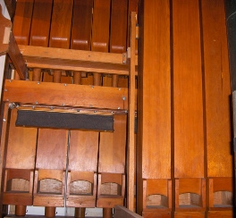

|
Bordón Spanish Bordone Italian Bordun German |
Borduna Swedish? Finnish? Bourdon French Flautado Violón Spanish |
|
Bardone Italian Barduen (unknown) Bassbrummer German |
Bordoncino Italian Brummbass German Burdo German |
This entry is still under construction. The next time you visit, check the Revision History to see what's been added.
A 16' stopped wooden flute of large scale. The name is derived from the French word bourdonner, meaning "to buzz". It is possibly the single most common 16' pedal stop. The most common name is Bourdon. It is similar to, and occasionally synonymous with, the Gedeckt and the Stopped Diapason. On theatre organs, the name is bogusly used for an extension of the Concert Flute, an open stop.
The illustrations are Audsley's. Click on the images for larger images. The photo is of the 16' Bourdon at Culver Academies, Indiana, USA, courtesy of John Gouwens.
|
Bourdon à Cheminée Bourdon Doux Bourdonecho Contra Bourdon Doppelrohrbordun |
Echo Bourdon Grand Bourdon (actually a mixture) Lieblichbourdon Perduna Rohrbordun Sub Bourdon |
Flautado Violón 8', Manual; Parroquia, Ibdes, Zaragoza, Spain; Sánchez 1732.
Flautado Violón 8', Manual; Iglesia de la Virgen, Tobed, Zaragoza, Spain; Irisarre & Serrano 1737.
Flautado Violón 8', Manual; Santo Domingo, Daroca, Zaragoza, Spain; Sánchez 1741.
Bordoncino 2', Manual II; Lapua, Finland; Kangasala 1938. This is the only known example of this name.
Brummbass 16', Pedal; All Saints' Episcopal Church, Atlanta, Georgia, USA; Schantz 197?. This is the only known example of this name.
Barduen 8', Chorsatz; Grace Lutheran Church, River Forest, Illinois, USA; Berghaus 1987. Small scale, hardwood. This is the only known example of this name.
See the Sound Files appendix for general information.
| Manual Bourdons | ||||
| Bourdon 16', Grand Orgue | St. Bernhard, Mainz, Germany | Cavaillé-Coll, 1872-1892 | arpeggio | St. Anne |
| Bourdon 16', Swell | Kellogg Auditorium, Battle Creek, Michigan, USA | Aeolian-Skinner, 1933 | St. Anne (8va) | |
| Bourdon 8', Great | First Baptist Church, Riverside, California, USA | Schantz, 1966 | arpeggio | St. Anne |
| Pedal Bourdons | ||||
| Bourdon 16', Pedal | First Baptist Church, Riverside, California, USA | Schantz, 1966 | arpeggio | |
|
Original site compiled by Edward L. Stauff. For educational use only. Bourdon.html - Last updated 12 Feb 2009. |
Home Full Index |
{kind=link}
{kind=link}
{kind=link}